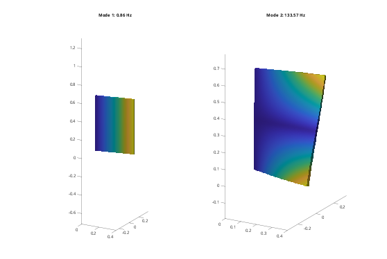

Contents
Tutorial 5 - Couplings and joints
Joints connect reference points with chosen directions left free, such as hinges, sliders and ball joints. A reference point is a rigid body, or a patch of an elastic body made rigid by a coupling. This tutorial covers:
- couplings (RBE2) on elastic bodies
- joint types, joint axes and springs on the released directions
- joint coordinates: locking them, loading them, and mechanism modes
addpath(fileparts(fileparts(mfilename('fullpath')))); out = fullfile(tempdir, 'femTutorials'); if ~isfolder(out), mkdir(out); end alu = fembd.material(70e9, 0.33, 2700);
1. An elastic door on two hinges
A 400 x 20 x 600 mm aluminium door, hinged along its x = 0 edge.
fembd.boxSTL(fullfile(out, 'door.stl'), [0 0 0], [400 20 600]); door = fembd.Body(fullfile(out, 'door.stl'), alu, Size = 20, Scale = 1e-3); a = fembd.Assembly(); a.add(door);
2. Couplings
a.couple(body, sel) makes the selected nodes follow a new 6-dof reference point (at their centroid, or at Point) and returns its name. Here the two hinge knuckles are 60 mm patches of the edge face.
edge = @(X) X(:,1) < 1e-9; r1 = a.couple('door', @(X) edge(X) & X(:,3) < 0.06, Name = 'hingeLow'); r2 = a.couple('door', @(X) edge(X) & X(:,3) > 0.54, Name = 'hingeHigh'); disp({a.Refs.Name});
{'hingeLow'} {'hingeHigh'}
3. Revolute joints
a.joint(A, B, type, ...) connects B to A ('ground' is allowed for A). The joint is placed at Point (default: B's reference point) and turns about, or slides along, Axis (the local z of the joint frame). The free directions become joint coordinates, which are new dofs. Stiffness puts a spring on them: here a torsion spring (N m/rad) in the lower hinge.
k = 20; j1 = a.joint('ground', r1, 'revolute', Axis = [0 0 1], Stiffness = k); j2 = a.joint('ground', r2, 'revolute', Axis = [0 0 1]); [K, M, T] = a.system(); [V, f] = fembd.modes(K, M, 4); % The first mode is the door swinging against the spring. Check it against % a rigid door: f = sqrt(k/I)/(2 pi), with I the inertia about the hinge. m = 2700*0.4*0.02*0.6; I = m*(0.4^2 + 0.02^2)/12 + m*0.2^2; fprintf('swing mode: FE %.4f Hz, rigid door %.4f Hz\n', f(1), sqrt(k/I)/(2*pi)); disp(table((1:4)', f, 'VariableNames', {'mode', 'f_Hz'})); figure('Color', 'w'); for i = 1:2 subplot(1, 2, i); u = T*V(:,i); a.plot(u, 0.1/max(abs(u(1:3*size(a.X, 1))))); title(sprintf('Mode %d: %.2f Hz', i, f(i))); view(30, 20); end
swing mode: FE 0.8557 Hz, rigid door 0.8558 Hz
mode f_Hz
____ _______
1 0.85565
2 133.57
3 322.54
4 393.46

4. Joint coordinates are dofs
a.dof(joint) gives the joint coordinates in the full vector u. You can load them (a torque on a revolute joint), read them as outputs, or use them as Craig-Bampton boundary dofs (tutorial 10). A 1 N m torque on the lower hinge twists the door by about tau/k.
tau = 1;
fu = zeros(a.nDof, 1); fu(a.dof(j1)) = tau;
u = T*(K\(T'*fu));
fprintf('hinge rotations: %.4f and %.4f rad (tau/k = %.4f)\n', u(a.dof(j1)), u(a.dof(j2)), tau/k);
hinge rotations: 0.0500 and 0.0500 rad (tau/k = 0.0500)
5. Locking a joint
Supporting a joint coordinate locks the joint: a.fix(joint, []) (or a.fix(joint, [], dirs) for some of its coordinates). With the lower hinge locked, the door can only twist, so the swing mode disappears.
a.fix(j1, []);
[K, M] = a.system(); [~, fl] = fembd.modes(K, M, 2);
fprintf('lower hinge locked: f1 = %.2f Hz\n', fl(1));
lower hinge locked: f1 = 39.34 Hz
6. Other joint types and mechanism modes
Types, with their free directions in the joint frame: fixed (none), revolute (rz), prismatic (uz), cylindrical (uz rz), spherical (rx ry rz), planar (ux uy rz), free (all six: a bushing when combined with Stiffness). Any mask is possible with Free = [ux uy uz rx ry rz] (logical). Free directions without stiffness are mechanisms: they show up as 0 Hz modes. A ball joint (spherical) leaves three.
fembd.boxSTL(fullfile(out, 'cart.stl'), [0 0 0], [100 100 50]); cart = fembd.Body(fullfile(out, 'cart.stl'), struct('rho', 7850), Size = 50, ... Order = 1, Scale = 1e-3, Rigid = true); mc = 7850*0.1*0.1*0.05; b = fembd.Assembly(); b.add(cart); b.joint('ground', 'cart', 'prismatic', Axis = [1 0 0], Stiffness = 1e5); [K, M] = b.system(); fprintf('prismatic + spring: %d dof, f = %.3f Hz (sqrt(k/m): %.3f Hz)\n', ... size(K, 1), full(sqrt(K/M))/(2*pi), sqrt(1e5/mc)/(2*pi)); b = fembd.Assembly(); b.add(cart); b.joint('ground', 'cart', 'spherical', Point = [0 0 0]); [K, M] = b.system(); [~, fs] = fembd.modes(K, M, 3); fprintf('spherical joint: %d dofs, frequencies %s Hz (mechanism)\n', size(K, 1), mat2str(fs', 3));
prismatic + spring: 1 dof, f = 25.404 Hz (sqrt(k/m): 25.404 Hz) spherical joint: 3 dofs, frequencies [0 0 0] Hz (mechanism)
7. Posing joints
Joint coordinates are small motions about the current geometry. To analyse another configuration, set the joint to a finite position with a.pose(joint, value) (rad or m, relative to where the joint was created). Everything on the B side moves rigidly, and a.system() then gives K and M about the new pose. Here a rigid pendulum (a point mass on an arm) hangs from a revolute joint with a torsion spring: its frequency depends on the pose only through the inertia, so it stays the same.
c = fembd.Body.pointMass(1, [0.5 0 0], zeros(3), Name = 'bob'); b = fembd.Assembly(); b.add(c); b.joint('ground', 'bob', 'revolute', Point = [0 0 0], Axis = [0 0 1], ... Stiffness = 10, Name = 'pivot'); for ang = [0 45 90] b.pose('pivot', deg2rad(ang)); [K, M] = b.system(); fprintf('pivot at %2d deg: bob at %s m, f = %.4f Hz\n', ang, ... mat2str(c.Ref, 3), full(sqrt(K/M))/(2*pi)); end % A prismatic joint is posed the same way, with an offset in metres. See % examples/demoSerialArm.m for an elbow-angle sweep of an elastic arm.
pivot at 0 deg: bob at [0.5 0 0] m, f = 1.0066 Hz pivot at 45 deg: bob at [0.354 0.354 0] m, f = 1.0066 Hz pivot at 90 deg: bob at [1.11e-16 0.5 0] m, f = 1.0066 Hz
8. Closed loops: a four-bar linkage
Joints may close kinematic loops. Here three point-mass links form a planar four-bar with a torsion spring in the crank joint. The fourth joint closes the loop and becomes a cut joint: its constraint is removed by QR coordinate partitioning. The planar loop is overconstrained in 3D (redundant out-of-plane rows), which is detected automatically. One dof remains: the crank angle, because the crank joint was defined first.
P = {[0 0 0], [0.05 0.1 0], [0.3 0.15 0], [0.25 0 0]}; % O2, A, B, O4
mk = [0.2 0.5 0.3]; Jz = [1e-4 4e-4 2e-4];
b = fembd.Assembly();
for i = 1:3
b.add(fembd.Body.pointMass(mk(i), (P{i} + P{i+1})/2, Jz(i)*eye(3), ...
Name = sprintf('link%d', i)));
end
b.joint('ground', 'link1', 'revolute', Point = P{1}, Stiffness = 50, Name = 'crank');
b.joint('link1', 'link2', 'revolute', Point = P{2});
b.joint('link2', 'link3', 'revolute', Point = P{3});
b.joint('ground', 'link3', 'revolute', Point = P{4}); % closes the loop
[K, M] = b.system();
fprintf('four-bar: %d dof, f = %.3f Hz, crank coordinate in q: %d\n', size(K, 1), ...
full(sqrt(K/M))/(2*pi), numel(b.qdof(b.dof('crank'))));
four-bar: 1 dof, f = 13.216 Hz, crank coordinate in q: 1
9. Transmissions: a belt drive
a.transmission relates coordinates of different joints through the stretch delta = sum_i c_i s_i: a spring with Stiffness, or exact without. Here a motor rotor drives a rigid arm through a belt with ratio N = 3 (motor turns 3x): delta = theta_motor/N - theta_arm. The belt mode is the two inertias oscillating against each other.
Jm = 2e-4; Ja = 0.05; N = 3; kBelt = 2e4; b = fembd.Assembly(); b.add(fembd.Body.pointMass(0.1, [0.1 0 0], Jm*eye(3), Name = 'rotor')); b.add(fembd.Body.pointMass(1e-9, [0 0 0], Ja*eye(3), Name = 'arm')); b.joint('ground', 'rotor', 'revolute', Point = [0.1 0 0], Name = 'motor'); b.joint('ground', 'arm', 'revolute', Point = [0 0 0], Name = 'axis'); b.transmission({'motor', 'axis'}, [1/N -1], Stiffness = kBelt); [K, M] = b.system(); [~, fb] = fembd.modes(K, M, 2); fprintf('belt mode: FE %.2f Hz, two-inertia formula %.2f Hz\n', fb(2), ... sqrt(kBelt*(1/Ja + 1/(N^2*Jm)))/(2*pi)); % Without Stiffness the belt is rigid (an ideal gear): one dof remains, % the motor angle, with the arm inertia reflected as Ja/N^2.
belt mode: FE 539.98 Hz, two-inertia formula 539.98 Hz
10. Rules
- Joints are processed in the order they are created; define driving joints first, so their coordinates stay independent.
- A joint whose B side is supported, or already follows another joint, or that closes a loop, becomes a cut joint (exact constraint rows).
- pose() cannot move closed loops yet (no loop-closure solver).
- Everything is linearised about the current configuration.
- Transmissions couple joint coordinates only; shaft loads from belt tension are not modelled. See examples/demoSerialArm.m for joints between two elastic bodies.